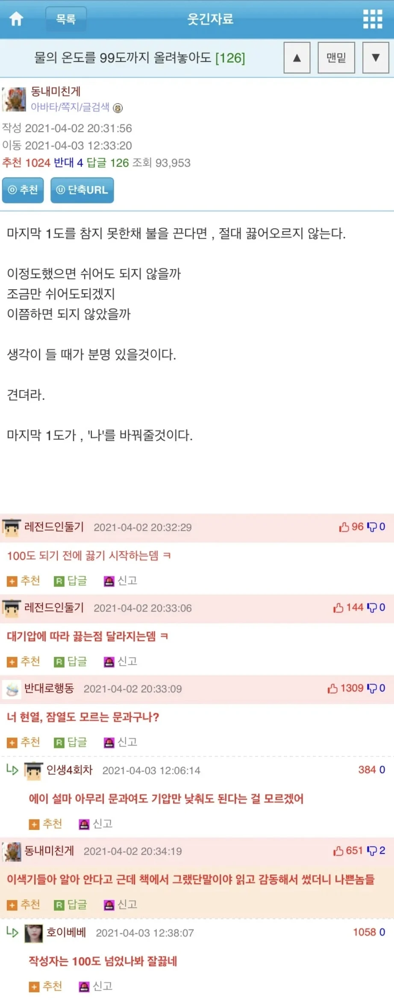

물은 99도에서 끓지 않는다
댓글
냄비 표면은 100도가 넘어서 그 경계에서 끓기 시작함. 반면 온도를 재는 물 속은 100도가 안될수있지
기압에 따라 달라지고 물의 순도에 따라 달라짐
우일석 이 멍청한 새끼
0.99999999...
돌리기선수들만 모였네ㅋㅋ
바보야
212도에서끓거든???
오우 씨벌 아메리카드림이여????
K -온도
70도 언저리에서부터 보글거리기 시작함.
고거슨 냄비표면은 고온으로 가열되서 거기 닿는 물이 먼저 증발되시 시작해서 그런것
온도를 재는 액체 내부는 100도에 도달하기 전인 것이지
그래서 액체가 전체적으로 끓어오르는 것이랑 별개로 더 낮은 온도에서 기포가 보이기 시작하는 것임
미리 끓는놈이 아웃라이어다
끓?
ㅋㅋㅋ
엥 하나님이?
ㅋㅋㅋㅋㅋㅋ 막댓 존나 끓기네
'이 정도면 컵라면이 익지 않을까?' 정도의 온도면 인생을 살아가는데 충분하다
바보같이 한계까지 본인을 내몰지 마라. 행복은 이미 니 발 밑에 떨어져 있다.
아닌데? 끓는물 부으라고 되어있는데?
요새 일본에 냉수넣는 컵라면도 나왔더라
그럼 우주에서는 몇도부터 끓어 ??
3, 40도 부터기화하는데 기화하면서 열도 뺐다보니 남은 물은 온도가 낮아져 얼음결정이 되어버림
그래도 우주선 내부는 기압을 두고있어서 지상과비슷한수준에서 끓음
끓는다는건 뜨거운게아니라 기화되는거니깐
실례지만 끓고 계십니다
끓는다의 기준은 어디서부터인가
정말 신기하지 않아? 정확히 100이라는 숫자에 도달해야 끓기 시작한다니 말이야!
막댓때매 더 웃김ㅋㅋㅋㅋㅋ
에베레스트 정상에 가는 사람들은 설익은 열정이라는 거냐
끓?
"표준대기압을 상정한 질문이실까요?"
물이 99도 100도라고 말하지만 냄비속 물의 온도는 균일하지 않으며, 실제로는 냄비와 물이 닿는 부분의 온도가 매우 높고, 이 film 층 다음의 온도는 꽤 균질하다.
미국인 : 물이 딱 100도에서 끓는거 보면 이세상은 신이 만든 증거야
미국인이면 212도지
화씨 쓰거든
어? 그러게 어떻게 물은 딱 100도에서 끓는 거지?
셀시우스의 마음임. 셀시우스가 살아있을 땐 물이 어는 온도를 100 끓는 온도를 0으로 했음. 걔 사후에 지금으로 바뀐 거임.
삼중점을 검색하세요
끓적끓적
??? : 자 그럼 먼저 끓는다를 정의해야 하는데요, 끓는다는게 대체 뭘까요?
이래서 이과새끼들은....
212도에서 끓는데
잘끓네가 킥임 ㅋㅋ
과학적 사실을 문과 감성으로 해석했으니 이제 이과 한테 맞을 시간이지 ㅋㅋㅋ
갬성도 뭐도 없는 잔인무도한 이과놈들